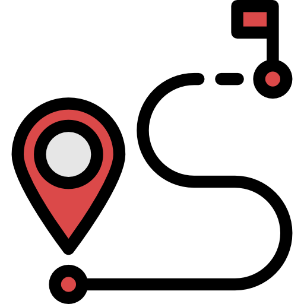

Dodatne informacije

Polasci su svakog dana ujutro U 8.30 i popodne oko 14.00.

Velika tura je duga 8km i potrebna su 3 sata da se dođe od početka do kraja, dok je Mala tura duga 5km i potrebno je oko 2h od početka do kraja.
Transport je organiziran od početka do kraja
Čamci mogu primit 6 ili 8 ljudi